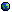

about projects links
Projects:
- Toki te Kone -- derived from Sonja Lang's conlang Toki Pona, Toki te Kone adds features and words to make a more general purpose, but still minimal language. o kama sona e toki te kone!
- WILD-BREAKER.ex -- an into-the-screen game where you have to shoot down all the incoming ships before they get past you. This was originally made for a game jam over at Battle of the Bits. It's a browser game, but was designed to be run locally. You can find the original version here (login required).
- eyesoul -- a floaty, bouncy shoot-em-up that I originally wrote for a game jam over at Battle of the Bits. You can find the original submission here (login required).
- divekick? -- a quick and dirty clone of Divekick that I made for my friends before the game was actually released; this is from 2013. Windows EXE, made with Game Maker 5.3a. GMD source included.
- the deep motion -- a mouse and keyboard shoot-em-up I was working on in 2014. Made with Game Maker 5.3a. Windows EXE with GMD source. 2 levels.
- illicit engineering -- my first publicly released Doom WAD file, released in 2015. Made for Doom 1, not Doom 2. It's not that great, but it gets better as it goes along. I'd recommend starting on E1M4, although skipping E1M1 will do wonders for your enjoyment. Enraged Eggplant on YouTube did a playthrough, which you can watch here. I have improved quite a bit since making this WAD, and I am currently working on some others.
More to come, either as I do new things or as I re-discover old ones. While making this site, I have found a lot of things that I haven't touched in years. In addition, much of my work is on other sites -- check the links section of this site for where you can find it.
Page updated on 5/4/2023mdy.
This site can be viewed in any browser, although it will look slightly better in a more recent one.